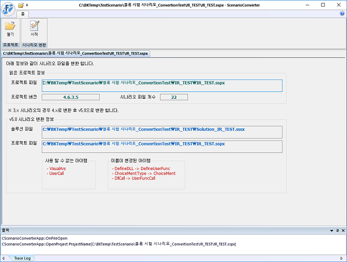
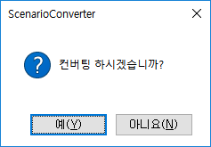
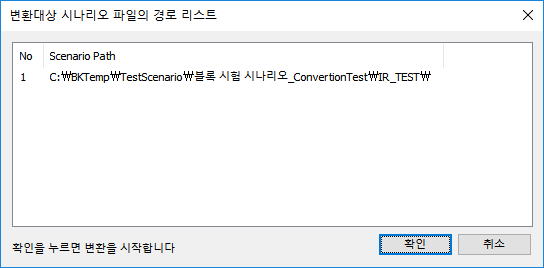
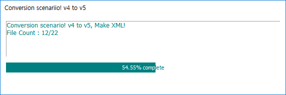
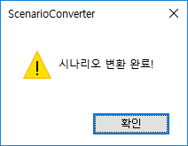

| 프로젝트 컨버전 | 시작 다음 이전 |
XGenCusStudio v3, ForCusStudio v4 버전으로 작성된 시나리오 파일을 ForCusStudio v5 XML 형식의 시나리오 파일로 컨버전 할 수 있습니다. 버전된 프로젝트는 다시 이전 버전으로 돌아갈 수 없기 때문에, 컨버전 하기전에 반드시 프로젝트를 백업하세요. 컨버전을 하기 위해서는 설치 시 포함된 컨버전 툴(ScenarioConverter)로 할 수 있습니다.
파일
· 컨버전을 하면 프로젝트 파일(.sspx)과 같은 위치에 솔루션 파일(.sssx)이 생성되며 솔루션 파일은 프로젝트 파일을 포함하게 됩니다. ForCusStueio v5 에서는 솔루션 단위로 시나리오를 오픈하며, 솔루션에는 여러 프로젝트가 포함 될 수 있습니다. · 기존 파일은 이름 및 확장자를 변경하지 않고 형식이 이전(바이너리)과 다른 텍스트(XML) 형식으로 새로 생성됩니다.
.sssx : 솔루션 파일 .sspx : 프로젝트 파일 .ssfx : 서비스 시나리오 파일 .msfx : 메뉴 시나리오 파일 .iidx : 컴포넌트 아이템 속성 정보 데이터(Item Information Data) DB 파일(프로젝트 단위로 생성)
컨버전
· ScenarioConverter를 실행하고 열기에서 컨버전 할 프로젝트를(.sspx) 오픈합니다.

리본메뉴 시나리오 변환 > 시작 버튼을 누르면 컨버전 할 것인지 확인 창이 팝업됩니다.

예(Y)를 누르면 컨버전 대상 파일을 확인하여 컨버전 대상 파일이 있는 경로 리스트를 팝업합니다.

확인 버튼을 눌러서 컨버전 합니다.


|
| Copyrights(C) Bridgetec.co.kr. All Rights Reserved | 시작 다음 이전 |